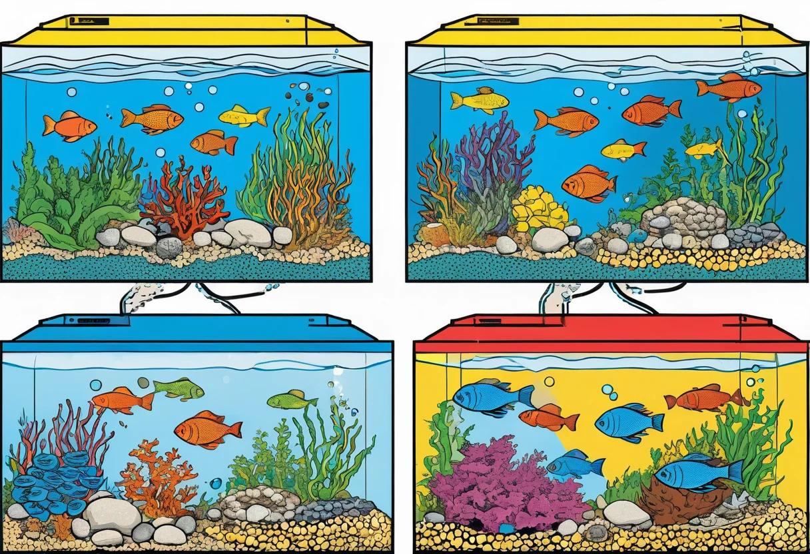

Ein neues Aquarium wirkt oft schon nach wenigen Stunden fertig: Bodengrund liegt, Pflanzen stehen, Filter läuft und das Wasser ist klar. Biologisch ist das Becken zu diesem Zeitpunkt aber noch nicht stabil. Genau hier beginnt die Einlaufphase. Beim Aquarium einfahren siedeln sich nützliche Bakterien an, die später Fischkot, Futterreste und abgestorbene Pflanzenteile abbauen. Der wichtigste Meilenstein ist der sogenannte Nitritpeak. Wer ihn versteht und geduldig abwartet, verhindert viele Anfängerprobleme und schützt seine Tiere vor Vergiftungen.
Was bedeutet „Aquarium einfahren“?
Mit Einfahren ist nicht gemeint, das Aquarium einfach einige Tage mit laufender Technik stehen zu lassen. Es geht um den Aufbau eines mikrobiologischen Gleichgewichts. In jedem Aquarium entsteht Ammonium beziehungsweise Ammoniak aus organischer Belastung. Spezialisierte Bakterien wandeln diese Stoffe zuerst in Nitrit und anschließend in Nitrat um. Nitrat ist in moderaten Mengen deutlich weniger gefährlich und wird durch Wasserwechsel sowie Pflanzenwachstum reduziert.
Diese Bakterien leben vor allem auf Oberflächen: im Filtermaterial, im Bodengrund, auf Pflanzen, Wurzeln, Steinen und Scheiben. Im freien Wasser befinden sich vergleichsweise wenige davon. Deshalb bringt ein großer Wasserwechsel allein keine stabile Biologie, und deshalb sollte Filtermaterial nie gründlich unter heißem Leitungswasser ausgewaschen werden.
Der Nitritpeak einfach erklärt
Nitrit (NO₂) ist für Fische schon in kleinen Mengen kritisch, weil es die Sauerstoffaufnahme im Blut behindert. Beim Nitritpeak steigt der Nitritwert während der Einlaufphase deutlich an, weil die erste Bakteriengruppe bereits Nitrit produziert, die zweite Gruppe aber noch nicht in ausreichender Menge vorhanden ist, um es zu Nitrat weiterzuverarbeiten. Nach einigen Tagen bis Wochen sinkt der Wert wieder, sobald genügend nitritabbauende Bakterien aktiv sind.
Der Peak kommt nicht in jedem Aquarium gleich stark oder am gleichen Tag. Er hängt von Temperatur, pH-Wert, Filtervolumen, Bepflanzung, Bodengrund, Startbakterien, Futterzugabe und vorhandener organischer Belastung ab. Manche Becken zeigen einen deutlichen Ausschlag, andere nur eine kurze messbare Erhöhung. Entscheidend ist nicht der Kalender, sondern der gemessene Wasserwert.
Schritt 1: Technik vollständig in Betrieb nehmen
Richte das Aquarium komplett ein, bevor die Einlaufphase beginnt. Filter, Heizer und Beleuchtung sollten von Anfang an laufen. Der Filter ist das biologische Herz des Beckens: In seinen Schwämmen, Keramikringen oder anderen Medien siedeln sich besonders viele nitrifizierende Bakterien an. Stelle den Auslass so ein, dass die Oberfläche leicht bewegt wird. Das verbessert den Sauerstoffeintrag, den die Bakterien für ihre Arbeit benötigen.
Für tropische Gesellschaftsbecken sind 24 bis 26 °C häufig passend. Eine stabile Temperatur beschleunigt den Bakterienaufbau im Vergleich zu kaltem Wasser. Die Beleuchtung muss nicht extrem lang laufen; sechs bis sieben Stunden täglich reichen am Anfang meist aus und senken das Risiko von Algenblüten.
Schritt 2: Pflanzen früh einsetzen
Schnellwachsende Aquarienpflanzen sind während der Einfahrphase wertvolle Helfer. Hornkraut, Wasserpest, Limnophila, Schwimmpflanzen oder Vallisnerien nehmen Nährstoffe auf und konkurrieren mit Algen. Setze Pflanzen deshalb direkt beim Start ein und entferne schmelzende Blätter regelmäßig. Kleine Anpassungsprobleme sind normal, besonders bei In-vitro-Pflanzen oder emers gezogenen Stängelpflanzen.
Je mehr gesunde Pflanzenmasse vorhanden ist, desto stabiler reagiert das Aquarium auf Nährstoffschwankungen. Gleichzeitig bieten Pflanzen zusätzliche Besiedlungsflächen für Mikroorganismen. Ein dicht bepflanztes Becken läuft oft ruhiger ein als ein fast leeres Aquarium mit viel Licht.
🛒 Nützliche Tests für die Einlaufphase
Ein NO₂-Tröpfchentest ist die wichtigste Kontrolle beim Einfahren. Teststreifen sind bequem, Tröpfchentests liefern bei Nitrit aber meist besser ablesbare Ergebnisse.
👉 Nitrittests bei Amazon ansehenSchritt 3: Bakterien füttern – aber vorsichtig
Ohne Nährstoffquelle vermehren sich Filterbakterien nur langsam. Viele Aquarianer geben in den ersten Tagen winzige Mengen Fischfutter ins leere Becken. Dieses Futter zersetzt sich und liefert Ammonium, aus dem die Bakterienkette entstehen kann. Wichtig ist die Dosierung: Eine kleine Flocke alle ein bis zwei Tage genügt für ein typisches Einsteigerbecken. Sichtbare Futterreste sollten nicht massenhaft liegen bleiben.
Alternativ können hochwertige Bakterienpräparate den Start unterstützen. Sie ersetzen jedoch nicht die Kontrolle der Wasserwerte. Auch mit Starterbakterien kann Nitrit auftreten, und auch ein scheinbar schneller Start sollte durch Messungen abgesichert werden.
Schritt 4: Wasserwerte messen und dokumentieren
Miss in den ersten zwei Wochen alle zwei bis drei Tage Nitrit. Sobald NO₂ nachweisbar ist, kontrolliere täglich oder jeden zweiten Tag, bis der Wert wieder bei 0 mg/l beziehungsweise im nicht nachweisbaren Bereich liegt. Notiere Datum, Nitritwert, Temperatur und besondere Beobachtungen. Diese einfache Dokumentation hilft, den Verlauf zu verstehen und nicht nach Gefühl zu handeln.
Neben Nitrit sind pH, KH, GH und Nitrat sinnvoll. Für den eigentlichen Besatzentscheid ist Nitrit jedoch der kritische Wert. Ein Aquarium ist nicht automatisch bereit, weil es klar aussieht. Klares Wasser kann biologisch instabil sein, während leicht trübes Wasser in der Startphase oft nur eine harmlose Bakterienblüte zeigt.
Faustregel: Setze die ersten Fische erst ein, wenn Nitrit mehrere Tage hintereinander nicht nachweisbar ist und der Filter ohne Unterbrechung gelaufen ist.
Typischer Zeitplan für die Einlaufphase
Tag 1: Aquarium einrichten, Technik starten, Pflanzen einsetzen und Beleuchtung moderat einstellen. Das Wasser kann durch Bodengrund oder Wurzeln leicht trüb sein.
Tag 2 bis 7: Erste Mikroorganismen vermehren sich. Du kannst minimal füttern oder Starterbakterien einsetzen. Nitrit ist oft noch niedrig, kann aber bereits ansteigen.
Woche 2 bis 3: In vielen Becken erscheint jetzt der Nitritpeak. Der NO₂-Wert steigt messbar an. In dieser Phase gehören keine Fische in das Aquarium. Pflanzenpflege, vorsichtige Reinigung abgestorbener Blätter und Messungen stehen im Vordergrund.
Woche 3 bis 5: Nitrit fällt wieder ab. Das Becken wirkt stabiler, Pflanzen treiben neu aus und erste Algenbeläge können auftreten. Erst wenn NO₂ dauerhaft nicht nachweisbar bleibt, ist der Weg für einen vorsichtigen Erstbesatz frei.
Ab Woche 5: Viele Aquarien sind nun bereit für die ersten robusten Tiere. Trotzdem gilt: langsam besetzen, wenig füttern und weiter messen.
Erster Besatz: langsam und in kleinen Gruppen
Der häufigste Fehler nach der Einlaufphase ist ein zu großer Erstbesatz. Jeder neue Fisch erhöht die Belastung, und die Bakterienpopulation muss sich daran anpassen. Beginne mit einer kleinen Gruppe passender Fische oder, je nach Wasserwerten, mit wenigen Schnecken. Warte danach mindestens eine Woche, bevor weitere Tiere einziehen. Beobachte Fressverhalten, Atmung und Wasserwerte.
Füttere in den ersten Tagen sparsam. Alles, was nicht gefressen wird, landet im Stickstoffkreislauf und kann erneut Nitrit verursachen. Gerade junge Aquarien profitieren von Zurückhaltung: kleine Portionen, regelmäßige Kontrolle und wöchentliche Teilwasserwechsel sind sicherer als üppige Fütterung.
🛒 Starter für stabile Wasserqualität
Bakterienstarter, Wasseraufbereiter und geeignetes Filtermaterial können den Start erleichtern. Entscheidend bleibt aber eine geduldige Einlaufphase mit Messkontrolle.
👉 Wasserpflege bei Amazon entdeckenWas tun, wenn Nitrit nach Fischbesatz steigt?
Steigt Nitrit in einem besetzten Aquarium an, ist schnelles Handeln gefragt. Füttere zunächst gar nicht oder nur minimal. Mache einen großen Wasserwechsel von 50 % oder mehr, bei Bedarf täglich, bis der Wert sinkt. Achte darauf, dass Temperatur und Wasseraufbereiter passen, damit die Tiere nicht zusätzlich gestresst werden. Eine stärkere Oberflächenbewegung verbessert die Sauerstoffversorgung.
Prüfe außerdem den Filter: Läuft er durchgehend? Ist der Durchfluss stark reduziert? Wurde Filtermaterial zu gründlich gereinigt oder ersetzt? In jungen Becken sollte man nie das komplette Filtermaterial austauschen. Wenn eine Reinigung nötig ist, drücke Schwämme nur vorsichtig in entnommenem Aquarienwasser aus.
Häufige Fehler beim Einfahren
- Zu frühe Fische: Der Nitritpeak wird übersehen oder nicht gemessen.
- Zu viel Futter: Organische Belastung steigt schneller, als Bakterien sie verarbeiten können.
- Filter ausstellen: Ohne Sauerstoff und Durchfluss leiden die wichtigen Bakterien.
- Komplette Filterreinigung: Dadurch wird ein großer Teil der Biologie entfernt.
- Zu lange Beleuchtung: Frische Becken reagieren oft mit Algen, wenn Licht und Nährstoffe nicht im Gleichgewicht sind.
- Nur nach Tagen entscheiden: Vier Wochen sind ein Richtwert, aber der Nitrittest entscheidet.
Wasserwechsel während der Einlaufphase – ja oder nein?
Bei einem unbesetzten Aquarium sind Wasserwechsel während des Nitritpeaks meist nicht zwingend nötig. Sie können sogar den messbaren Verlauf abflachen, was für Anfänger verwirrend ist. Trotzdem sind Teilwasserwechsel sinnvoll, wenn sehr viele Pflanzenreste, starke Trübungen oder überschüssige Nährstoffe auftreten. In bepflanzten Aquascapes wird häufig von Beginn an regelmäßig Wasser gewechselt, um Algen vorzubeugen.
Sobald Tiere im Becken sind, gilt eine andere Priorität: Nitrit muss verdünnt werden. Dann sind großzügige Wasserwechsel die wichtigste Sofortmaßnahme. Ein Wasserwechsel zerstört die Filterbiologie nicht, weil die entscheidenden Bakterien auf Oberflächen sitzen.
Checkliste: Ist dein Aquarium bereit?
- Filter und Heizer laufen seit mehreren Wochen ohne längere Unterbrechung.
- Nitrit ist mehrere Tage hintereinander nicht nachweisbar.
- Pflanzen zeigen neues Wachstum oder wirken stabil.
- Keine großen Mengen Futterreste oder faulende Pflanzenteile sind sichtbar.
- Temperatur und Grundwasserwerte passen zum geplanten Besatz.
- Du hast einen Plan für langsamen Besatz und regelmäßige Wasserwechsel.
Fazit
Ein Aquarium sicher einzufahren ist keine komplizierte Wissenschaft, aber es verlangt Geduld und Messkontrolle. Der Nitritpeak zeigt, dass sich der Stickstoffkreislauf entwickelt – er ist also kein Grund zur Panik, sondern ein wichtiger Hinweis. Wer Technik und Pflanzen von Anfang an richtig nutzt, sparsam organische Belastung einbringt, Nitrit regelmäßig misst und den Erstbesatz langsam angeht, schafft die Grundlage für ein stabiles, gesundes Becken.
Die wichtigste Regel lautet: Nicht das Datum entscheidet, sondern das Aquarium. Wenn Nitrit dauerhaft nicht nachweisbar ist und das Becken ruhig läuft, kannst du die ersten Tiere behutsam einsetzen. So startest du entspannt in die Aquaristik und ersparst dir viele typische Probleme der ersten Wochen.
Hast du Fragen zur Einlaufphase oder unsichere Wasserwerte? Schreib uns eine Nachricht – wir helfen gerne weiter!